Authorization¶
Apache Kafka Authorization¶
Apache Kafka supports several types of authentication, but managed cloud services tend to limit it to one or two methods and implement their own authorization mechanism. For IBM Event Streams, see their connecting and security documentation and our administration page for more details.
HRI Management API¶
The Management API uses OAuth 2.0, OIDC, and JWT standards for authorization. The specific types of authorization tokens used by the Management API endpoints are as follows:
| Endpoint | Path | Authorization Requirements |
|---|---|---|
| tenant | /tenants |
require IAM tokens with permissions to the Elasticsearch instance |
| stream | /tenants/<tenantId>/streams |
require IAM tokens with permissions to the Event Streams instance |
| batch | /tenants/<tenantId>/batches |
are optionally authorized by using JWT tokens from an OIDC-compliant authorization service, or with a custom authentication proxy service. More details on batch endpoint authorization below. |
| healthcheck | /healthcheck |
does not require any authorization |
Batch Endpoint Authorization¶
Regarding batch endpoint authorization with JWT Tokens, the HRI does not include an authorization or authentication service, so users must provide one themselves and configure it as per the specification below. Oauth 2 and OIDC are widely used standards which allow solutions to use their own authorization & authentication. Your token issuer must be OIDC compliant, because the OIDC defined well-known endpoints are how the Management API will validate access tokens. HRI uses IBM Cloud App ID for its reference implementation of an OIDC-compliant authorization service. There are instructions provided below for how HRI users can configure their own instance of IBM Cloud App ID.
Optionally, if solutions need to use a different authorization mechanism, authorization on the batch endpoints can be disabled. Solutions would deploy their own authorization proxy service, which would receive the initial request, perform authorization, and then proxy calls to the Management API service.
Required Token Scopes:¶
You must configure your authorization service to include HRI roles and tenant scopes in the access tokens (Note: scope is a standard claim that is a space-separated list of strings).
HRI Role Scopes:¶
hri_data_integrator- Data Integrator role; allows access to create, query, and update batches. Results are filtered to batches that the Data Integrator created. Note that thesubclaim in the access token is used to identify the Data Integrator and stored in the batchintegratorIdfield.hri_consumer- Data Consumer role; allows access to query batches. Results are not filtered.hri_internal- Internal HRI validation role; allows the Flink Validation job to call the batchprocessingCompleteorfailendpoints.
Tenant Scopes¶
A Tenant scope matching the tenant ID is required every time you call a “batch” endpoint in the Management API. The scope must have tenant_ as a prefix to the tenant ID.
For example, if a data integrator tries to create a batch by making an HTTP POST call to tenants/24/batches, the token must contain scope tenant_24, where the 24 is the tenantId.
Also, see Multi-tenancy for more information about tenants and roles. See the API spec for more details about required roles for specific endpoints.
Configuring the Token Issuer¶
The token issuer is a configuration parameter of the Management API, and only one issuer may be set. The issuer must match the iss claim in the access token. See deployment for more details.
Using App ID as Your Authorization Service¶
IBM Cloud App ID is an IBM Cloud managed authorization and authentication service. App ID supports custom claims/scopes for client credentials by creating ‘Applications’ with scopes and assigning them to other ‘Applications’ via roles.
Below are the manual steps to configure App ID for your reference, but you will probably want to automate some or all of these steps for your solution using the App ID API. (Note all examples here will be of the AppID-Landing App ID service instance.)
Initial Configuration¶
- Create an “HRI” Application and its associated scopes. This application represents the HRI as a ‘protected’ resource (API) that other clients will be granted permissions to access. It is not a client that will connect to the HRI, and it’s credentials should never be used.
-
After opening your App ID service instance in your cloud account, note the App ID actions menu on the left-hand side of your screen:
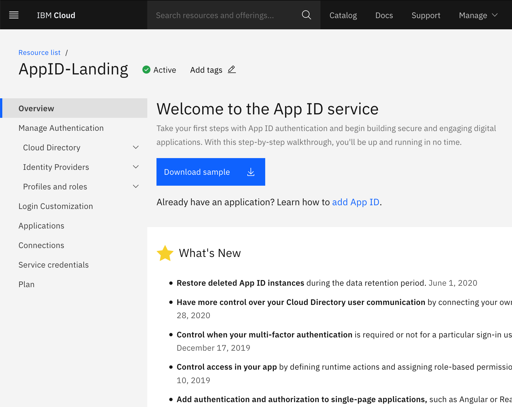
-
Click on the “Applications” menu item to see the Applications Screen:

-
Click on the blue “Add application” button on the top-right of the screen:
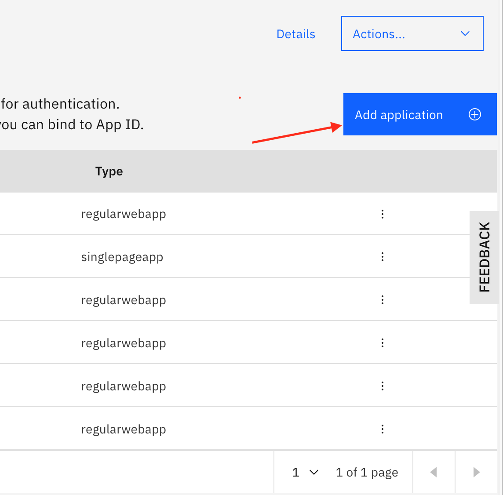
-
Enter the Name (
HRI), keep the default Type of “Regular web application” and add both of the required scopes using the “+” button (hri_data_integrator,hri_consumer,hri_internal; see HRI Scopes above) and click the “Save” button: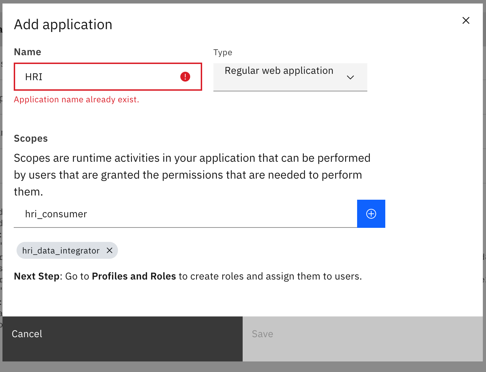
-
Now you should be able to view your newly created “HRI” Application, and it’s details (note: that you will now see the three scopes in the “scopes” section):
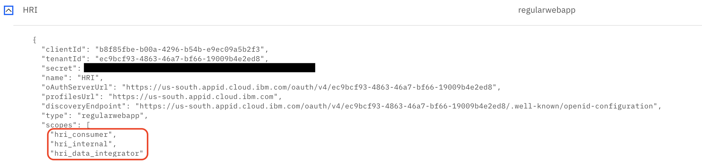
- Create Tenant scopes:
-
In the App ID “Applications” screen, find the “HRI” Application created in step 1 above. Expand It’s “…” menu on the far right and select “Edit”.
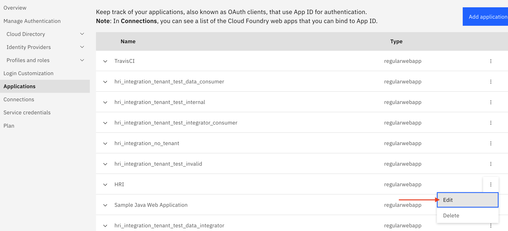
-
Using the scopes “+” button, create a scope with the naming convention
tenant_<tenantId>for every current tenant in your solution, then click the “Save” button.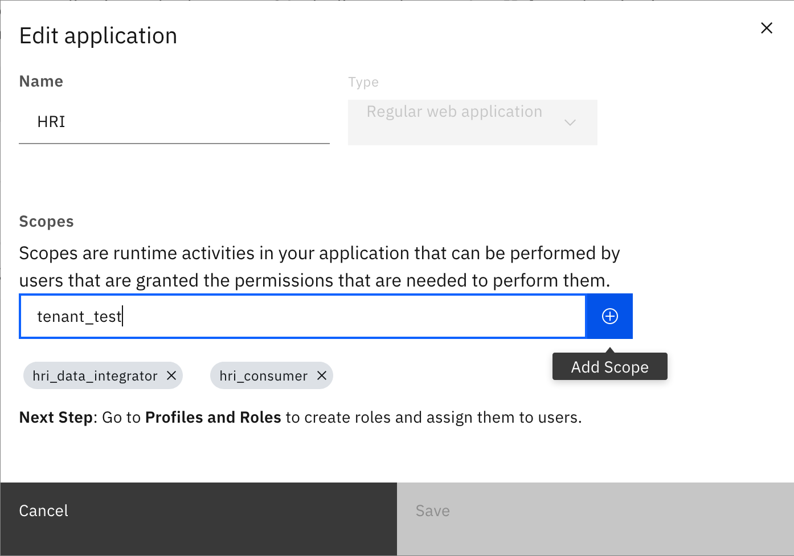
Please note that we added a scope named “tenant_test”, where the
testportion of this scope string exactly matches the actual Tenant Name that was created when Adding/Creating the new tenant: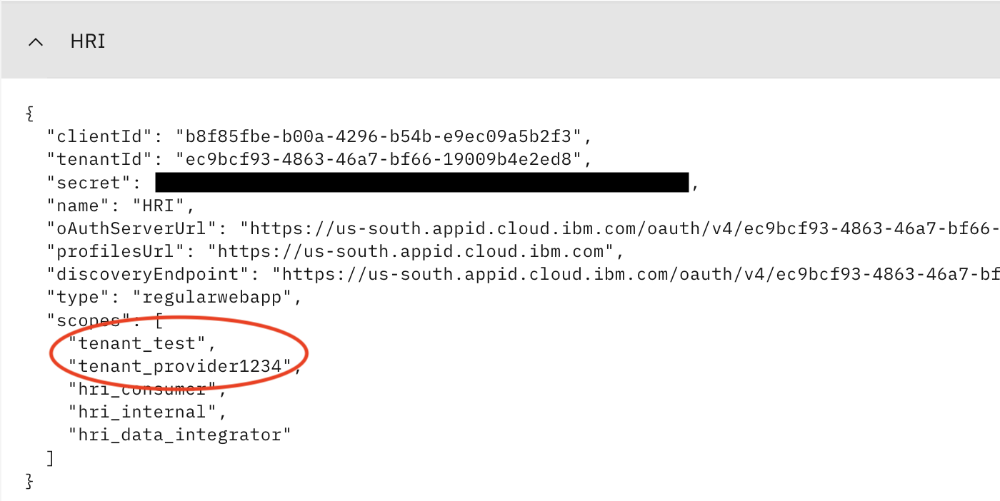
- Create new roles for each of the scopes you created in steps 1 & 2. You will create roles for the HRI role scopes and for every existing Tenant in your solution.
-
Click on the “Profiles and roles” sub-menu (under “Manage Authentication”) and then on the “Roles” sub-menu under that:
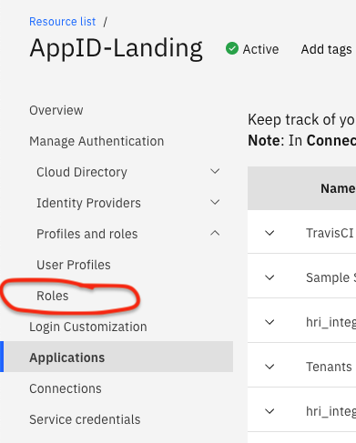
-
Click on the blue “Create Role” button on the top-right of the screen. Enter a role name and description (optional). In the “Scopes” field, enter the HRI Application name followed by a ‘/’ and then the scope name. Then click the “+” button. Each role will have a 1-to-1 relationship with one scope. Last, click the “Save” button. Below is example for the “test” Tenant role:
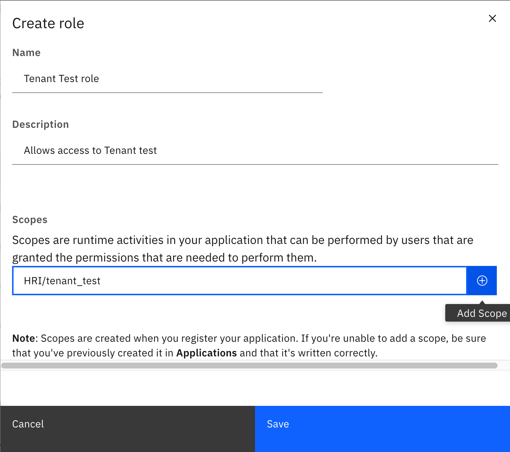
-
A example “test” Tenant role:
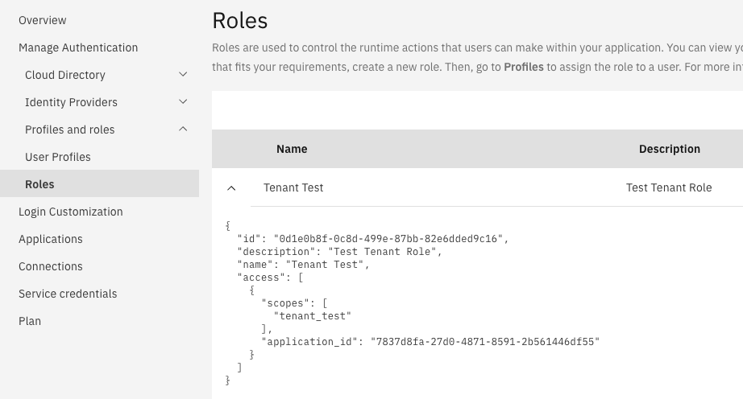
-
An example HRI Data Integrator role:
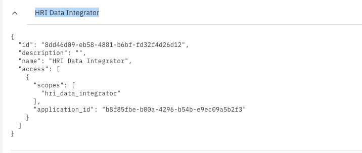
-
An example HRI Consumer role:
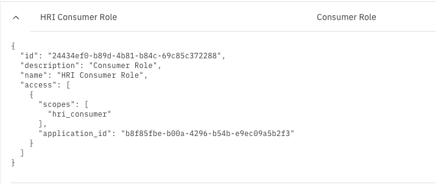
-
An example HRI Internal role:
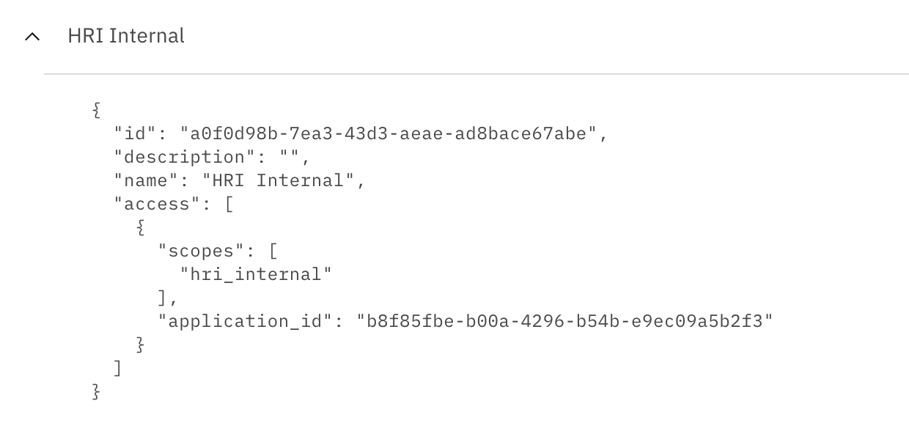
Adding Data Integrators and Consumers¶
-
Create a new Application for every HRI client (Data Integrator or Data Consumer) that uses the Management API.
For example, here is a screenshot that includes five (5) different user-instance Applications created for the HRI Integration Test (client):
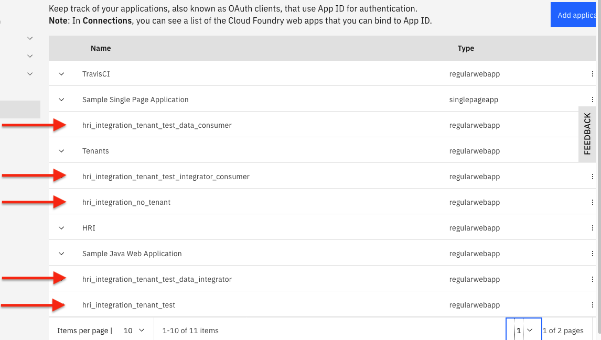
An example of what one of these new Applications would look like after created:
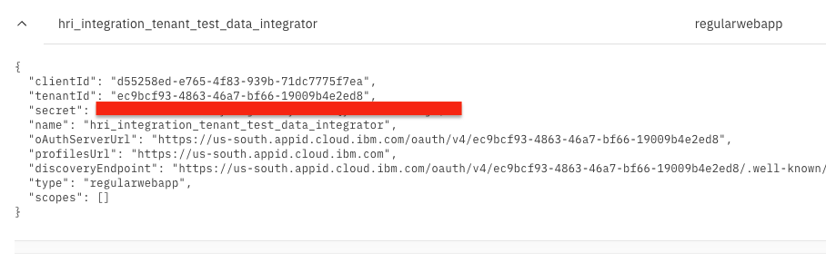
Please note that the “scopes” property is empty and that this new “credential” Application has been created for the “tenant_test” and a “data integrator”. Hence, in Step 2 below, it will have the roles of “Tenant Test” and “HRI Data Integrator” assigned to it.
-
Assign roles to each of the Credential Applications you created in step 1 to grant access to the HRI and specific tenants. Currently, this can only be done via making HTTP calls directly to the App ID API, specifically the endpoint
/management/v4/{tenantId}/applications/{clientId}/roles(see App ID API Specification section “Management API - Applications”).For example, if you have just created a new Data Integrator credential Application, assign the HRI Data Integrator role, as well as a role for every tenant that data integrator produces data for, by taking the following actions:
-
Using the command-line, Login to the IBM CLI and obtain an OAuth token:
ibmcloud iam oauth-tokensThat will return a message like this:
IAM token: Bearer eyJraWQi.......{Very long string} -
Next, export that long string (starting after the “Bearer ” section) to a bash/shell variable named TOKEN:
export TOKEN=eyJraWQi.......{Very long string} -
Compose the correct HTTP/REST endpoint URL for the Assignment API call:
- Find the correct App ID HTTP/REST endpoint URL root for managing the instance. In service credentials, it is the value of the
managementUrlfield (e.ghttps://us-south.appid.cloud.ibm.com/management/v4/ec9bcf93-4863-46a7-bf66-19009b4e2ed8):
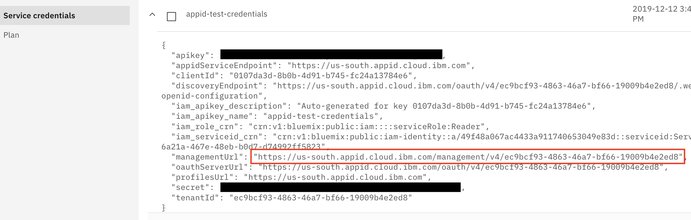
-
To complete the URL you will need to add the following:
/applications/[client_id_of_application_assigning_to]/roles
where “client_id_of_application_assigning_to” will be replaced with
clientIdvalue from the Application, such as the “hri_integration_tenant_test_data_integrator” Application. That clientId ends in5f7ea:The completed full example App ID HTTP PUT url would look like this:
https://us-south.appid.cloud.ibm.com/management/v4/ec9bcf93-4863-46a7-bf66-19009b4e2ed8/applications/d55258ed-e765-4f83-939b-71dc7775f7ea/roles - Find the correct App ID HTTP/REST endpoint URL root for managing the instance. In service credentials, it is the value of the
-
Construct your JSON string of roles that you will be associating with this “hri_integration_tenant_test_data_integrator” Application.
For our example, as the name of our new Credential Application suggests, we will be assigning the “Tenant Test” and “HRI Data Integrator” roles to the “hri_integration_tenant_test_data_integrator” Application.
You will need to use the “id” field value of each Role you are associating with this particular application. In our case, that means we will need the role “id”s ending in
d9c16and26d12: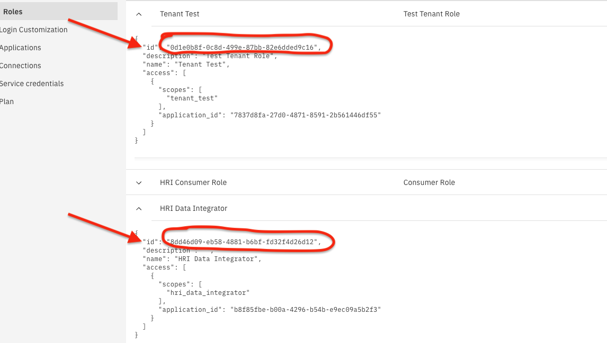
-
Your roles JSON string would then look like the following:
{"roles":{"ids":["0d1e0b8f-0c8d-499e-87bb-82e6dded9c16","8dd46d09-eb58-4881-b6bf-fd32f4d26d12"]}}(Note that this is a list of n-number of roles, to which you may add more role IDs.)
-
Finally, you can assemble your API HTTP request. Using a tool such as cURL at the command-line or Postman, create your REST/HTTP request.
Using cURL at the command-line (assumes you have curl installed; see https://curl.haxx.se/download.html):
curl -X PUT https://us-south.appid.cloud.ibm.com/management/v4/ec9bcf93-4863-46a7-bf66-19009b4e2ed8/applications/d55258ed-e765-4f83-939b-71dc7775f7ea/roles \ -H "Authorization: Bearer $TOKEN" \ -H 'Content-Type: application/json' \ -d '{"roles":{"ids":["0d1e0b8f-0c8d-499e-87bb-82e6dded9c16","8dd46d09-eb58-4881-b6bf-fd32f4d26d12"]}}'Note that your roles JSON string should be surrounded by single-quotes (‘).
HRI Internal Application Setup¶
An HRI Internal Application is only needed if Validation is enabled. Each of these Applications represents one or more Flink jobs that validate batches of records. At a minimum, HRI Internal Applications need to be assigned a tenant role, the hri_internal role, and the hri_consumer role. The recommended approach is to assign all tenant roles to a single HRI Internal application. In this approach, the same client-id and client-secret will be used for every single Flink job (see Validation Processing).
Authorization Workflow Example¶
To present an example, Data Integrators and Consumers using App ID would need to request an access token from the App ID service using the OAuth 2.0 “client credentials” grant flow for reference, see IBM App ID Documentation. The request must include the desired scopes and the HRI Application ID as the audience.
This is what an example cURL statement would look like to request the access token:
curl -X POST https://us-south.appid.cloud.ibm.com/oauth/v4/ec9bcf93-4863-46a7-bf66-19009b4e2ed8/token \
-H 'Content-Type: application/x-www-form-urlencoded' \
-H 'Authorization: Basic <client_id:client_password>' \
-d 'grant_type=client_credentials&scope=tenant_test hri_data_integrator&audience=b8f85fbe-b00a-4296-b54b-e9ec09a5b2f3'
## Notes: For basic authentication you have to base64 encode the client_id and password like this
echo -n '<client_id>:<client_password>' | base64
And, here is an example access token for a Data Integrator Application with access to tenant ‘test’, produced by App ID:
{
"iss": "https://us-south.appid.cloud.ibm.com/oauth/v4/ec9bcf93-4863-46a7-bf66-19009b4e2ed8",
"exp": 1598459309,
"aud": [
"b8f85fbe-b00a-4296-b54b-e9ec09a5b2f3"
],
"sub": "d55258ed-e765-4f83-939b-71dc7775f7ea",
"amr": [
"appid_client_credentials"
],
"iat": 1598455709,
"tenant": "ec9bcf93-4863-46a7-bf66-19009b4e2ed8",
"scope": "tenant_test hri_data_integrator"
}
Note the included scope(s):
tenant_testhri_data_integrator